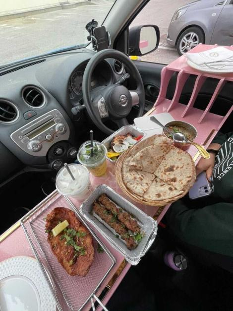

Popular Global Trend of Setting Dining Area Inside Car Reaches Kenya
With the rising necessity, restaurateurs have been compelled to develop an in-car dining experience with a full setup similar to five-star hotels.
The new trend, which has hit some parts of the country, including Mombasa, encompasses serving travellers food inside their vehicles, thus allaying health risks while eating in public spaces.
A long wooden plank substituting a table runs across the driver's window to the passenger's side.
Waiters then place food on the wooden plank, improvised to resemble modern tables with all accessories. Food is then served on special designed elongated trays that fit in the car. The trays and wooden planks fit perfectly in the vehicle, allowing passengers to comfortably roll up the windows and switch on the air conditioner. The hype, which is changing the shape of the dining experience in the country and even creating more job opportunities, started after a Qatar-based blogger Foodie Shamsi went viral showcasing a table set up inside the car.
Videos shared online showed the trend was also replicated in London. Diners adopted the idea stemmed from drive-throughs which are popular across the world where motorists pass by a restaurant and order food which is delivered almost immediately. The in-car dining experience was popular in the early 2000s, but with time limits and traffic laws, it became outlawed in some countries. Some cafes in Kenya even organise Park and Chill events with the car dining experience to inform and filtrate the Kenyan market. The major challenge they face is the parking space which has hindered the expansion of the in-car dining experience in the country.
